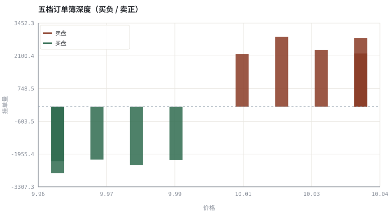
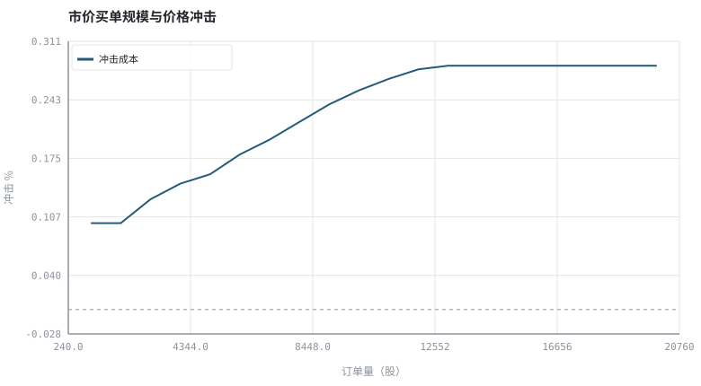

第 15 章盘口、分时与逐笔：价格是怎样形成的
看盘之前先理解数据流：你看到的五档，是订单簿的一个有损快照。
本章位置：第三阶段从「价格如何形成」开始；第 16 章 · K 线、坐标与复权：看图前先校准数据 把逐笔聚合成 K 线，第 17 章 · 均线、趋势与支撑阻力～第 19 章 · 形态识别：从主观描述到可判定规则 再逐层加指标与形态。
订单簿是两个按价格排序的优先队列；市价单是一次 pop until filled，VWAP 是加权平均，冲击是队列深度不足时的溢出成本。盘口快照是有损缓存，不是真相。
- 能读写买卖五档盘口并计算价差、深度失衡。
- 能模拟市价单逐档吃单，计算 VWAP 与冲击成本。
- 能说明分时图、成交明细与 K 线之间的关系。
- 能解释为什么盘口大单不等于真实买卖意愿。
§知识点地图
每个知识点都配了 1～2 个扩展学习链接；本章完整资源清单见 扩展学习。
| # | 知识点 | 扩展学习 | 状态 |
|---|---|---|---|
| 1 | 限价订单簿 | Order book · Market microstructure | 正文已覆盖 |
| 2 | 买卖五档与价差 | Order book · Bid–ask spread | 正文已覆盖 |
| 3 | 深度与失衡 | Order book · Bid–ask spread | 正文已覆盖 |
| 4 | 市价单逐档成交 | Limit order · Slippage (finance) | 正文已覆盖 |
| 5 | VWAP 与滑点 | Slippage (finance) · Market microstructure | 正文已覆盖 |
| 6 | 市场冲击 | Market microstructure · Slippage (finance) | 正文已覆盖 |
| 7 | 逐笔成交与分时 | Volume (finance) · OHLC chart | 正文已覆盖 |
| 8 | 幌骗与冰山单 | Order book · Bid–ask spread | 正文已覆盖 |
§15.1订单簿是一个双端优先队列
买侧按价格降序、卖侧按价格升序排队，同价位按时间优先。最佳买价 bid 与最佳卖价 ask 之间的差就是 spread，它是流动性最直接的报价：你以 ask 买入、立刻以 bid 卖出，必然损失一个价差。
spread = ask_1 − bid_1 | 相对价差 = spread / mid | mid = (ask_1 + bid_1)/2
| 盘口字段 | 含义 | 误读 |
|---|---|---|
| 买一 / 卖一价量 | 当前最优报价与挂单量 | 挂单可瞬时撤单，不代表真实意愿 |
| 五档累计深度 | 前五档委托量之和 | 不含隐藏单、冰山单与场外流动性 |
| 委比 / 失衡 | (买量−卖量)/(买量+卖量) | 易被小额挂单操纵 |
| 逐笔成交 | 已撮合的成交记录 | 主动买/卖方向依赖交易所的标记口径 |
§15.2市价单的成本是一次遍历
一笔数量为 Q 的市价买单会从卖一开始逐档吃掉，成交均价 VWAP 高于 mid，差额就是冲击成本 + 价差成本。订单越大、深度越薄，VWAP 越差，且这个关系通常是凸的。第 29 章会据此设计拆单。
VWAP(Q) = Σ(p_k × q_k) / Q | 冲击 = VWAP(Q)/mid − 1
§15.3从逐笔到分时到 K 线
- 逐笔：每笔成交的时间、价、量、方向，信息最全也最噪。
- 分时：按分钟聚合的均价/最新价与成交量，常用于日内观察。
- K 线：按周期聚合 OHLCV（第 06、16 章），信息被压缩但结构清晰。
- 盘口快照：某个时刻的委托分布，与成交序列是两种不同的数据源。
K 线的 high/low 不一定等于你能在那个价位成交；盘口挂单也不一定真的存在到你的订单到达。回测必须明确用的是哪一种数据。
§Python 分析实例
实验 15-1 · 五档盘口、深度失衡与市价单冲击
#!/usr/bin/env python3
# -*- coding: utf-8 -*-
"""构造订单簿快照，逐档吃单计算 VWAP，并画出订单量与冲击成本曲线。
数据为合成数据或模型示意，仅用于教学，不构成投资建议。
"""
from __future__ import annotations
import math
import pathlib
import random
import statistics
import sys
sys.path.insert(0, str(pathlib.Path(__file__).resolve().parents[3] / "tools"))
from chart import Chart, candlestick, heatmap, BLUE, RED, GREEN, AMBER
FIG = pathlib.Path(__file__).resolve().parents[1] / "fig"
FIG.mkdir(exist_ok=True)
random.seed(7)
# ---- 参数区 ----
MID = 10.00
TICK = 0.01
LEVELS = 5
BASE_SIZE = 2000 # 每档基准挂单量
ORDER_QTY = 6000 # 待执行的市价买单
MAX_QTY = 20000 # 冲击曲线扫描上限
# ---- 计算与作图 ----
rng = random.Random(7)
bid_px = [round(MID - TICK / 2 - i * TICK, 2) for i in range(LEVELS)]
ask_px = [round(MID + TICK / 2 + i * TICK, 2) for i in range(LEVELS)]
bid_sz = [int(BASE_SIZE * (1 + abs(rng.gauss(0, 0.4)))) for _ in range(LEVELS)]
ask_sz = [int(BASE_SIZE * (1 + abs(rng.gauss(0, 0.4)))) for _ in range(LEVELS)]
spread = ask_px[0] - bid_px[0]
mid = (ask_px[0] + bid_px[0]) / 2
imbalance = (sum(bid_sz) - sum(ask_sz)) / (sum(bid_sz) + sum(ask_sz))
def execute(qty):
left, cost, used = qty, 0.0, []
for px, sz in zip(ask_px, ask_sz):
take = min(left, sz)
cost += take * px
used.append((px, take))
left -= take
if left <= 0:
break
filled = qty - left
return cost / filled if filled else mid, filled, used
vwap, filled, used = execute(ORDER_QTY)
impact = vwap / mid - 1
c = Chart(FIG / "15-depth.svg", "五档订单簿深度（买负 / 卖正）", xlabel="价格", ylabel="挂单量")
c.bars(ask_px, ask_sz, RED, label="卖盘")
c.bars(bid_px, [-s for s in bid_sz], GREEN, label="买盘")
c.hline(0.0, "#9aa6b2")
print("深度图:", c.save())
qs = list(range(1000, MAX_QTY + 1, 1000))
impacts = [(execute(q)[0] / mid - 1) * 100 for q in qs]
i = Chart(FIG / "15-impact.svg", "市价买单规模与价格冲击", xlabel="订单量（股）", ylabel="冲击 %")
i.line(qs, impacts, BLUE, label="冲击成本")
i.hline(0.0, "#9aa6b2")
print("冲击图:", i.save())
print("最优买=%.2f 最优卖=%.2f 价差=%.4f (%.3f%%) | 深度失衡=%+.3f" %
(bid_px[0], ask_px[0], spread, 100 * spread / mid, imbalance))
print("市价买 %d 股 成交 %d 股 VWAP=%.4f 冲击=%.3f%% | 吃到第 %d 档" %
(ORDER_QTY, filled, vwap, 100 * impact, len(used)))操作：把 ORDER_QTY 从 6000 提高到 15000，观察吃到第几档以及冲击的增幅是否线性。 预期与判读：冲击成本随订单量加速上升（阶梯式、凸），因为便宜档位先被吃光。深度失衡只是快照，可瞬时撤单，不能单独作为方向信号。
改参数看趋势：把 BASE_SIZE 减半（更薄的盘口），同一订单的冲击会明显变大。 文件位置：part3/15-order-book/code/15-book.py


代码块右上角可一键复制；仓库里的 code/*.py 由 tools/extract_code.py 从这些代码块自动抽取。脚本只用标准库、固定 random.seed(7)，运行后写出 fig/*.svg；批量运行用 ./tools/run_python.sh。
§本章参考资料
按本章知识点挑选的精读资料；更多检索入口见 扩展学习。
Bid–ask spread
百科 · 参考资料流动性成本的最小单位
怎么用：买卖价差作为流动性成本https://en.wikipedia.org/wiki/Bid%E2%80%93ask_spread
Market microstructure
百科 · 参考资料价格形成、冲击成本与做市机制
怎么用：价格形成与微观结构https://en.wikipedia.org/wiki/Market_microstructure
§常见误区
- 把盘口挂单量当真实买卖意愿，忽略撤单与冰山单。
- 用 mid 价回测成交，忽略价差与冲击。
- 把逐笔主动买卖方向当成资金流入流出。
- 用分时均价代替可成交价，忽略当时的档位深度。
§习题与思考
- 推导为什么相对价差是「立刻反手平仓」的最小成本。
- 在示例里加入冰山单（每档成交后补充挂单），观察冲击曲线如何变缓。
- 说明「放量上涨」在逐笔、分时、K 线三个层次分别对应什么数据。
§扩展学习
以下资料按本章知识点挑选，可直接精读或对照真实数据；知识点地图里每一条也挂了 1～2 个直达链接。
- Order book（百科）：买卖档位、深度与逐笔撮合
Order book - Bid–ask spread（百科）：流动性成本的最小单位
Bid–ask spread - Market microstructure（百科）：价格形成、冲击成本与做市机制
Market microstructure - Limit order（百科）：限价单的成交不确定性与价格保护
Limit order - TradingView（行情）：多周期图表、指标脚本与 K 线形态的通用参照
TradingView
继续扩展：在 Google Scholar 检索本章相关论文 · 在 MIT OCW 检索配套课程 · 在 arXiv 检索预印本 · 全书参考资源总表 · 附录 A 速查与链接总表
§延伸阅读与内链
- 第 16 章 · K 线、坐标与复权：看图前先校准数据 K 线与坐标；第 29 章 · 订单执行、滑点与市场冲击 拆单与执行算法；第 26 章 · 事件驱动回测引擎：从信号到成交 回测中的成交价假设。